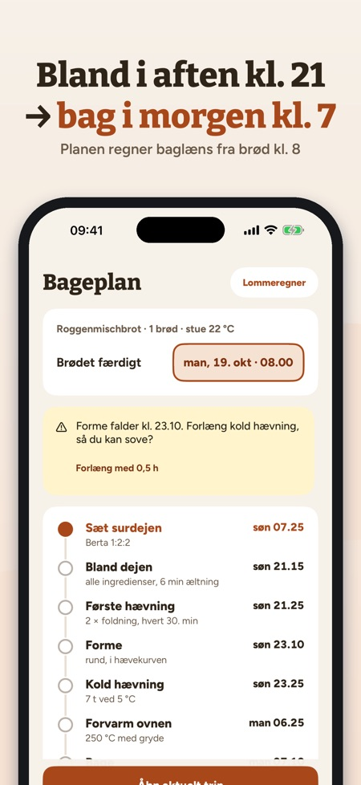
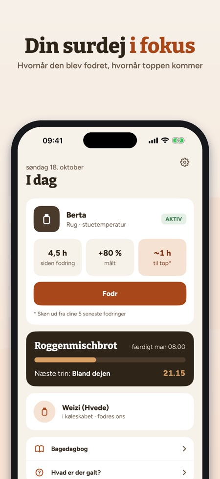
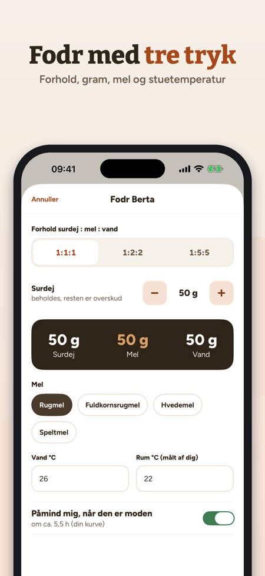

Fodr surdejen, planlæg bagning. Brødet færdigt kl. 8? Riseplan regner baglæns, hvornår du skal sætte, blande og folde – og advarer, hvis et trin falder midt om natten.



Din surdejsven: fodr, planlæg, bag – alt i gram og °C.
SURDEJ
• Én eller flere surdeje (rug, hvede, spelt) med alder og fodringer
• Fodr med tre tryk: forhold 1:1:1, 1:2:2 eller 1:5:5, gram, mel, vand- og stuetemperatur (målt af dig)
• Påmindelse, når surdejen er moden – efter din egen kurve
• Køleskabstilstand med ugentlig påmindelse
HÆVEKURVE
• Mål højden efter fodringen, og se din egen kurve
• Gennemsnitlig tid til toppen og største volumen fra dine seneste fodringer
• Hvor meget hurtigere surdejen er i en varmere stue – ud fra dine egne data
BAGERPROCENT-LOMMEREGNER
• Dejvægt, hydrering, surdej og salt → mel, vand, surdej og salt i gram
• Melet og vandet i surdejen regnes med
BAGEPLAN BAGLÆNS
• Vælg, hvornår brødet skal være færdigt – Riseplan regner hvert trin baglæns
• Hævetiderne tilpasses din stuetemperatur (markeret som tommelfingerregel)
• Advarsel, hvis et håndgreb falder i din hviletid, med forslag om længere kold hævning
• Påmindelse ved hvert trin
AKTIVT BAGETRIN
• Stor timer, tæller for stræk og fold, næste trin i sigte
OPSKRIFTER
• Rugbrød, Landbrot, Roggenmischbrot, Roggenbrot, Desembrood, Rågbröd/limpa, Grovbrød, Ruisleipä, pizza og pandekager af overskydende surdej
• Melnavne fra dit land (fx hvedemel, fuldkornsrugmel)
BAGEDAGBOG OG HJÆLP
• Fotos, stjerner og noter til hvert brød
• Hvad gør du ved væske på toppen, svag hævning, fladt brød eller for surt? Ved skimmel: smid den ud.
KØB
Uden køb: én surdej, fodring, påmindelser, lommeregner og tre opskrifter. Ét engangskøb låser alt op: flere surdeje, hævekurve, bageplan, aktivt bagetrin, alle opskrifter og bagedagbogen. Intet abonnement, ingen reklamer.
PRIVATLIV
Dine data bliver på enheden. Appen sender anonym brugsstatistik via Google Analytics for Firebase (fx hvilke skærme og knapper der bruges, køb i appen og omtrentligt land); men kun hvis du slår det til ved start eller i Indstillinger (slået fra som standard).